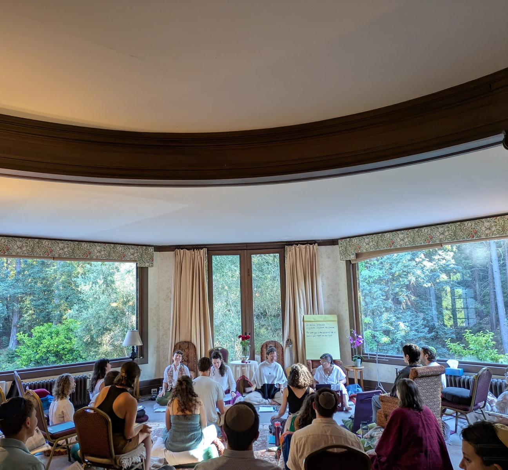

Let’s practice together.
The body communicates through gut feelings, tension, desire, the pull toward and away. Meditation is one way we can learn to attend to the happenings in the mind, body, and heart. Practicing with a teacher can help cultivate the skills to attend to both pleasant and unpleasant experiences, to discern what we experience in the body-mind. Returning to practice, again and again, can teach us when we should rest in unknowing and when we can derive meaning that can help us shape our lives with wisdom.

Tehom: A Six-Session Series for Deepening Practice in Fall 2026
You've practiced a little, or gone on retreat, but you've had a lapse in your practice or it just hasn't stuck. This series helps you sustain and deepen a practice of your own in community. Over six sessions, we introduce Jewish meditation and its roots in Kabbalah and Hasidism; develop skills for compassion and meeting obstacles on the path; and practice seeing and feeling inherent divinity in experience. Small groups. Apply for the in-person or online cohort.
One-on-One Work
Practice Mentorship
I offer personalized, trauma-informed support with your meditation practice, grounded in my training as a philosopher and teacher and the three-year Gates of Awareness Jewish Meditation Teacher Training. Meditation mentorship might be a good fit if you need extra time, support, or accountability with deepening or establishing a practice, troubleshooting difficult experiences, or working with what surfaces during practice. This support can be especially valuable if you feel you've hit a plateau or are experiencing resistance. I offer one-off 45-minute sessions as well as packages of six.
Writing Mentorship
I have over a decade of experience as a writer, editor, and writing consultant across grantwriting, college and graduate school applications, academia, executive communications, and fiction and creative nonfiction. I create a warm and rigorous environment to doula your next big project. See writing mentorship →
What people say
"I used to live in my head, mostly numb to sensations and emotions. I am leaving this retreat and I think this is the first time I am in my body, really."Retreat participant, 2024
"Jes was heart and body, holding us in space and sprinkling in a wealth of wisdom."Participant, IJS Young Adult Retreat
"I loved the facilitation, warmth, and expertise that Jes and Alison brought. They made me feel like I was exactly where I was supposed to be—especially as a beginner."Participant, daylong retreat with Alison Cohen
Retreats
Silent retreats are a chance to practice without our usual comforts, stressors, and routines. What thought loops and emotions remain when we are temporarily removed from our usual contexts of work, relationships, and daily life? On retreat, we practice befriending these habits of mind and body while learning to live with more compassion, equanimity, and wisdom.
Jewish Meditation Daylong Retreat for the Winter Solstice
With Alison Cohen. Save the date for December 20 in Boston—sign up for the newsletter to find out when registration opens.
Returning Anew: Shevet's 3rd Annual Silent Jewish Meditation Retreat for Younger Adults (20s & 30s)
Join IJS Core Faculty Rebecca Schisler, Kohenet Keshira haLev Fife, as well as Yael Shy and me, to spend five days in rural Connecticut grounding in silence, chanting, prayer, and Jewish teachings.
Sits & Ongoing Practice
Where I lead
Merhav Community Sit
An open donation-based monthly sit for Jewish meditation: niggunim (wordless melodies), a teaching, 30 minutes of silence, Q&A. All are welcome, no prior meditation or Jewish background needed.
[Date pattern] · [Sign up]
Segula: LGBTQ+ Monthly Mindfulness Sit
The Institute for Jewish Spirituality's free affinity sit exclusively by and for LGBTQ+ Jews, hosted by Jes with rotating guest teachers.
[One Thursday each month] · Sign up
Queer Sit Collective
A monthly online sit for LGBTQ+ people of every tradition and none.
[Date pattern] · [Sign up]
Where I'm a rotating teacher
Institute for Jewish Spirituality's Shevet: A Jewish Mindfulness Community for Young Adults.
I'm a rotating teacher for Shevet's free virtual weekly sit (Mondays at 5 P.M. PT/ 8 P.M. ET), the Shevet Camberville Jewish Mindfulness Collective (in person), and the annual Young Adult Retreat.
Sign up for emails
Ground & Center (Or HaLev)
Rotating teacher for Or HaLev's free sit series on Monday, Tuesday, and Thursday from 1:15-1:45 P.M. ET.
Sign up